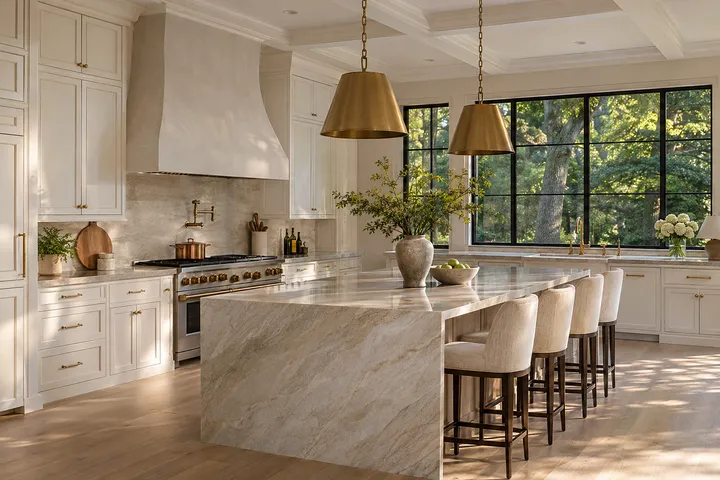

Kitchen Remodeling
Custom cabinetry, natural stone and layouts planned around how your family actually cooks and gathers.
Explore ServiceBlue Hammer Remodeling is based in Olney and works in Potomac, Bethesda, Chevy Chase, Kensington, Rockville and the Howard County corridor. Custom cabinetry, natural stone, honest budgets and a schedule we keep.

We keep our focus narrow so the design, the trades and the finish quality stay consistent from the first kitchen of the year to the last basement.
Custom cabinetry, natural stone and layouts planned around how your family actually cooks and gathers.
Explore Service
Primary suites, hall baths and powder rooms with curbless showers, heated floors and quiet, durable detailing.
Explore Service
Lower levels, built-ins and whole-interior refreshes that make every square foot feel intentional.
Explore Service
The homes we work in, from 1920s Chevy Chase colonials to Potomac customs and Clarksville estates, deserve more than a showroom package. We design around how your family actually lives, then build it with materials chosen to age well.
We stay within roughly 40–50 miles of Olney, and only in Maryland, so the same crew is on your project every day and our trade partners already know the houses.
Design first, then a written scope, then construction. No pricing from a napkin sketch.
Your goals, your home’s conditions and a realistic budget range.
Layouts, drawings, cabinetry, stone, tile and fixtures chosen together.
A written proposal and the permit application for your jurisdiction.
Protected house, weekly updates, and a punch list we finish.
Kitchens, baths and lower levels in the styles that suit local homes, from pre-war colonials to new estates. Use them to show us what you love.
Costs, timing, permits and how a project unfolds in Montgomery and Howard County. Here are the questions we hear first.
Read All FAQsMost full kitchen remodels we discuss in established Montgomery and Howard County homes plan between roughly $85,000 and $175,000; design-led kitchens with custom cabinetry, natural stone and new openings often run $175,000 to $300,000 and up. These are planning ranges, not quotes; your proposal is priced from drawings and selections.
We are based in Olney, MD 20832 and work only in Maryland, within about 40–50 miles: Olney, Brookeville and Ashton; Potomac, Bethesda, Chevy Chase, Kensington and Garrett Park; Rockville; and Clarksville, Highland, Fulton, Glenelg and Ellicott City in Howard County.
We do. Montgomery County DPS for most of our area, the City of Rockville inside city limits, Howard County DILP for the Howard corridor, plus any town or historic-district review your address requires.
No. Bring a list of frustrations and a few saved images, or an architect’s drawings. Design is part of what we do.
Whether you have drawings in hand or just a few ideas, tell us about your project. We review every request and reply with honest next steps.
Prefer to speak with us?